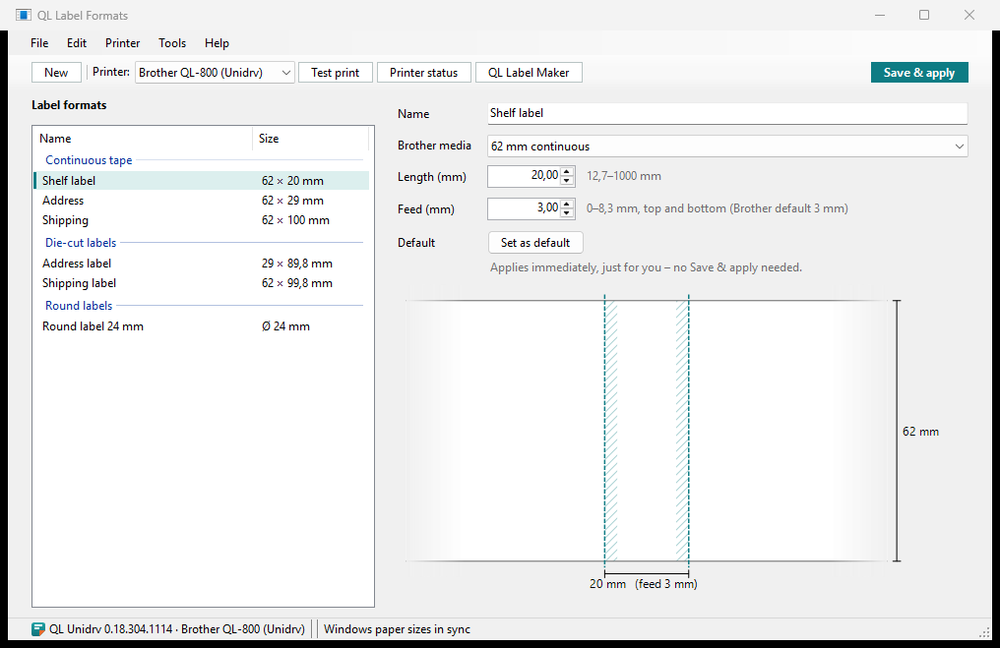

Label formats for every program
QL Label Formats is where you set up your label formats: which roll and which length. After Save & apply, every program offers them as paper sizes. It also shows what your QL printers are doing and sets up printers.

1 2 3 4 5 6- 1Toolbarnew format, the printer for test print and roll check, test print, printer status, Label Maker
- 2Save & applymakes the formats available in all programs
- 3Label formatsby continuous tape, die-cut and round labels; bold: your default; grey: doesn't fit the loaded roll
- 4Settingsname, Brother media, length, feed, default
- 5Previewthe label with its sizes
- 6Status barversion and QL printers, loaded roll, whether Windows knows the formats